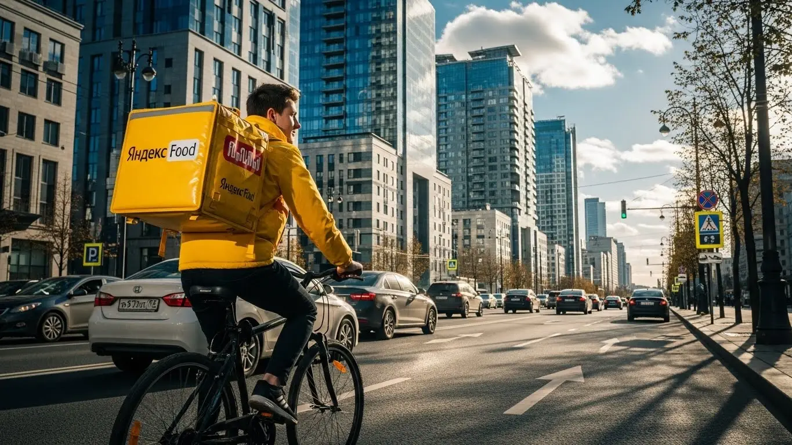

Работа курьером Яндекс Еды в Санкт-Петербурге 2025-2026: доход, график

- Работа курьером Яндекс Еды в Санкт-Петербурге: для кого эта вакансия и что вы получите
- Сколько вы будете зарабатывать курьером в Санкт-Петербурге: калькулятор дохода и разбор выплат
- Реальный заработок курьера в Санкт-Петербурге: смены и месячный доход
- График работы и форматы занятости
- Требования к кандидату и документы
- Самозанятость, налоги и юридическая чистота
- Пошаговое оформление и первый выход на линию в Санкт-Петербурге
- Пешком, на вело или на авто: что выгоднее в Санкт-Петербурге
- Районы, маршруты и «топовые» зоны заказов в Санкт-Петербурге
- Безопасность, страховка, штрафы и оплата простоя
- Плюсы и возможные минусы работы курьером в Санкт-Петербурге
- Реальные истории и отзывы курьеров из Санкт-Петербурге
- Короткие ответы на главные вопросы
- Итоги и ваш следующий шаг
Все города
Думаешь о работе курьером Яндекс Еды или Лавки в Санкт-Петербурге? Отличная идея, но сразу скажу: Питер – город со своим характером. Здесь не получится просто взять сумку и поехать, не зная нюансов. Боишься низкого дохода, что машина «убьется» на наших дорогах, или застрянешь в пробках на Невском в час пик? А может, переживаешь, как работать под дождем или снегом? Я сам через это прошел и знаю, что такое реальная работа курьером Яндекс Еды в Санкт-Петербурге, а не красивые обещания.
Многие новички в Санкт-Петербурге приходят в доставку с розовыми очками, а потом разочаровываются уже через месяц. Почему? Потому что не понимают «внутрянку». Одно дело — знать, сколько Яндекс обещает, и совсем другое — сколько останется после вычета расходов на бензин или проезд, налогов самозанятого, амортизации твоего велика или авто. Плюс, в Питере каждый район – это отдельная история: где-то заказов море, но пробки адские, а где-то тихо, но и заработка нет. Без понимания местной логистики и системы приоритетов, которая напрямую влияет на твой доход, легко наделать ошибок и потерять время и деньги. Если ты живёшь в Санкт-Петербурге, то подробнее про работу курьером Яндекс Еда в Санкт-Петербурге, включая краткую сводку условий, FAQ, детальный калькулятор и форму заявки, можно почитать здесь: работа курьером Яндекс Еда в Санкт-Петербурге.
В этой статье я не буду лить воду. Мы разберём всё по полочкам: выясним, какой формат работы курьером Яндекс Еды и Лавки в Санкт-Петербурге подходит именно тебе – пеший, вело или на авто. Посчитаем реальный доход с учётом всех расходов и покажем на примерах, где в Питере самые «рыбные» места для заказов, а куда лучше не соваться. Расскажу, как погода и сезоны влияют на твой заработок, какие штрафы бывают и как их избежать, а также честно сравним Яндекс с конкурентами в нашем городе. И, конечно, поделюсь отзывами местных курьеров, чтобы ты получил полную картину.
Меня зовут Алексей, и я в этой теме уже не первый год – сам начинал курьером, а теперь держу небольшой таксопарк-партнёр. Так что знаю всю кухню изнутри, особенно в Санкт-Петербурге. Давай по порядку, сейчас всё разложу по полочкам, чтобы ты не наступал на чужие грабли и сразу начал зарабатывать эффективно. Готов? Поехали!
Прежде чем мы углубимся в детали, вот краткий навигатор по основным темам статьи, который поможет тебе быстро сориентироваться.
Экспресс-навигация: что ты точно узнаешь о работе курьером в Санкт-Петербурге
В этой статье ты ТОЧНО узнаешь:
- Сколько на самом деле можно заработать за смену и месяц в Питере, учитывая расходы на транспорт и перекусы?
- Какой тип доставки (пеший, вело, авто) выгоднее выбрать для Санкт-Петербурга и почему?
- Как избежать штрафов и что такое оплата простоя, защищающая твой доход?
- Где в Санкт-Петербурге самые «рыбные» места для заказов и как их выбирать в приложении?
- Какие типичные ошибки новичков влияют на рейтинг и количество заказов?
- Как быстро оформить самозанятость и начать работу без опыта?
А если тебе некогда читать всю статью — переходи сразу к заключению, где ты найдёшь короткие ответы на все эти вопросы и указания, в каких разделах искать подробности.
А чтобы сразу получить наглядное представление о потенциальном доходе, взгляни на эту инфографику.
Ключевые цифры работы курьером в Санкт-Петербурге
Работа курьером Яндекс Еды в Санкт-Петербурге: для кого эта вакансия и что вы получите
Кому подойдёт эта работа в Санкт-Петербурге
Если ты ищешь гибкий график и возможность быстро начать зарабатывать без лишних проволочек, работа курьером Яндекс Еды в Санкт-Петербурге — это твой вариант. Она отлично подходит студентам, которым нужно совмещать учёбу с подработкой, или тем, кто только начинает свой трудовой путь и не имеет опыта. Здесь не требуется специальное образование или многолетний стаж, главное — желание работать и ответственность.
Многие приходят в Яндекс Еду за дополнительным доходом, совмещая с основной работой или используя эту возможность как временное решение. Водители-курьеры, например, могут эффективно использовать свой автомобиль в часы пик, когда заказов особенно много. В общем, если тебе важна свобода в планировании своего дня и ежедневные выплаты, эта вакансия точно для тебя.
Главные преимущества для жителей районов Приморский, Московский, Центральный
Одно из ключевых преимуществ работы курьером Яндекс Еды в Петербурге — это возможность выполнять заказы практически рядом с домом. Ты можешь выбирать слоты в своём районе, что значительно экономит время и силы на дорогу через весь город. Например, жители Приморского района могут сосредоточиться на доставках в районе Комендантского проспекта или Старой Деревни, где много жилых комплексов и торговых центров.
Для тех, кто живёт в Московском районе, удобно выполнять заказы вблизи станций метро «Московская» или «Звёздная», где сосредоточены крупные бизнес-центры и спальные кварталы. А если ты обитаешь в Центральном районе, то тебе открыты все возможности исторического центра с его многочисленными ресторанами и кафе. Такой подход позволяет не только зарабатывать, но и хорошо ориентироваться в знакомых локациях, избегая долгих поездок.
Краткое обещание по доходу и условиям
В Санкт-Петербурге курьеры Яндекс Еды могут рассчитывать на стабильный и достойный доход. За одну смену, в зависимости от типа доставки и количества часов, можно заработать от 2000 до 5000 рублей. Если работать полный месяц, то общий доход может достигать 70 000 – 90 000 рублей и выше, особенно если активно использовать пиковые часы и повышающие коэффициенты.
Важный момент — это ежедневные выплаты. Тебе не придётся ждать зарплату раз в месяц; деньги за выполненные заказы приходят на карту практически сразу. Кроме того, ты самостоятельно формируешь свой график, выбирая удобные слоты, и можешь стать курьером без предварительного опыта, пройдя короткое онлайн-обучение. Для начала работы достаточно иметь смартфон и, при необходимости, термокороб.
- Кейс из практики: Мой знакомый, студент СПбГУ, живёт на Васильевском острове. Он выходит на смены по 4-5 часов вечером, после пар, и в выходные дни. За неделю у него выходит около 15 000 – 20 000 рублей, покрывая свои расходы на жизнь и учёбу. При этом он выбирает слоты в своём районе, что позволяет ему быстро добираться до точки старта и не тратить время на дорогу.
Вывод по разделу: Работа курьером в Яндекс Еде в Санкт-Петербурге — это отличный вариант для тех, кто ищет гибкий график, ежедневные выплаты и возможность начать без опыта. Ты можешь работать в удобном для себя районе и рассчитывать на достойный доход, если подойдёшь к делу с умом.
Сколько вы будете зарабатывать курьером в Санкт-Петербурге: калькулятор дохода и разбор выплат
Из чего складывается доход курьера
Твой заработок курьера в Яндекс Еде складывается из нескольких ключевых компонентов, и важно понимать каждый из них. Во-первых, это базовая оплата за каждый выполненный заказ. К ней добавляется доплата за расстояние, которое ты преодолеваешь от ресторана до клиента. Чем дальше доставка, тем выше эта часть дохода.
Кроме того, существуют повышающие коэффициенты, которые активируются в часы пик, в плохую погоду или в районах с высоким спросом. Это могут быть вечера, выходные, дождливые дни или зоны вокруг крупных торговых центров, таких как «Галерея» или «Мега Дыбенко». Не забывай и про чаевые от благодарных клиентов — это приятный бонус, который может существенно увеличить твой дневной заработок. Среди важных преимуществ — оплата простоя, когда ты ждёшь выполнения заказа или его готовности, и возможная компенсация проезда, если ты автокурьер и выполняешь дальние заказы. Важно отметить, что все курьеры, работающие через платформу Яндекс Про, оформляются как самозанятые, что обеспечивает официальный доход и прозрачность выплат.
Как пользоваться калькулятором дохода
Чтобы прикинуть свой потенциальный заработок, используй калькулятор дохода. Это простой инструмент, который поможет тебе сориентироваться. Для начала выбери тип доставки: пеший курьер, велокурьер или автокурьер. Затем укажи, сколько часов в день ты планируешь работать и сколько дней в неделю готов выходить на линию.
В результате расчёта ты увидишь примерный дневной и месячный доход, исходя из средних показателей по Санкт-Петербургу. Конечно, это ориентировочные цифры, но они дают хорошее представление о том, на что можно рассчитывать. Помни, что фактический доход может быть выше, если ты будешь активно использовать пиковые часы и выбирать зоны с повышенным спросом через приложение Яндекс Про.
Твой потенциальный доход курьера в Санкт-Петербурге
Часов в месяц: 0
Расчёт примерный и основан на усреднённых показателях для Санкт-Петербурга. Реальный доход может меняться в зависимости от района, времени суток, бонусов и повышающих коэффициентов.
Примеры расчёта для пешего, вело- и авто‑курьера в Санкт-Петербурге
Давай рассмотрим несколько реальных сценариев для Санкт-Петербурга. Пеший курьер, работающий в центре города, например, в районе Невского проспекта или Петроградской стороны, может за 6-8 часов активной работы получить доход от 2500 до 3500 рублей в день. Здесь много заказов на короткие расстояния, что позволяет быстро выполнять их один за другим.
Велокурьер, который курсирует между спальными районами, такими как Купчино или Просвещения, за 8-10 часов может заработать 3500-4500 рублей. Велосипед даёт преимущество в скорости на средних дистанциях и позволяет избегать пробок. Водитель-курьер, работающий по всему городу и захватывающий пригороды вроде Пушкина или Колпино, за полную смену в 10-12 часов может получить до 5000-7000 рублей, особенно если берёт дальние и крупные заказы.
| Параметр | Пеший курьер | Велокурьер | Автокурьер |
|---|---|---|---|
| Базовая оплата за заказ | Стандартная | Стандартная + доплата за скорость | Стандартная + доплата за вес/объём |
| Доплата за расстояние | До 2-3 км | До 5-7 км | Без ограничений, выше за дальние |
| Повышающие коэффициенты | Часто в центре, пики | Часто в спальниках, пики, плохая погода | По всему городу, пики, плохая погода, пригороды |
| Чаевые | Хороший потенциал | Хороший потенциал | Высокий потенциал за крупные заказы |
| Оплата простоя | Да, при ожидании | Да, при ожидании | Да, при ожидании |
| Компенсация проезда/топлива | Нет | Нет | Да, за дальние заказы |
Если хочешь узнать больше о конкретных условиях и подать заявку, переходи на работу курьером Яндекс Еда в твоём городе, там есть подробный FAQ и форма для регистрации.
- Кейс из практики: Мой водитель, Сергей, работает на своей машине в районе Фрунзенского и Выборгского районов. Сергей обычно выходит на линию с 17:00 до 23:00 в будни и на весь день в выходные. В эти часы спрос всегда высокий, и он часто ловит заказы с повышенными коэффициентами. За 25-30 часов в неделю он стабильно получает около 35 000 – 40 000 рублей, что для подработки очень неплохо. Кроме того, все курьеры Яндекс Еды застрахованы на время выполнения доставок, что добавляет уверенности в работе.
Вывод по разделу: Твой доход как курьера Яндекс Еды в Санкт-Петербурге зависит от множества факторов: типа доставки, времени работы, выбранных районов и даже погоды. Используй калькулятор для оценки, но помни, что активная деятельность в пиковые часы и грамотный выбор слотов помогут тебе значительно увеличить заработок.
Реальный заработок курьера в Санкт-Петербурге: смены и месячный доход
Ну что, давай поговорим о самом главном — сколько реально можно заработать курьером в Санкт-Петербурге. Это не секрет, но и не фиксированная ставка, как на заводе. Твой доход зависит от многих факторов и условий работы: сколько часов ты готов работать, на чём доставляешь, и, конечно, от твоей смекалки. В Яндексе платят за каждый заказ, плюс есть доплаты за расстояние, повышающие коэффициенты в часы пик и бонусы за выполнение определённого количества доставок.
В среднем, опытный курьер в Питере может рассчитывать на 300–600 рублей в час, но это очень усреднённая цифра. Автокурьеры, например, часто выходят на более высокие показатели, особенно если берут дальние заказы или работают на своем авто в плохую погоду. Пешие и велокурьеры тоже не отстают, если грамотно выбирают районы и слоты. Важно понимать, что это не чистый доход, ведь нужно учитывать расходы на транспорт, связь и, конечно, налоги как самозанятого.
Вот тебе пример из практики. Мой знакомый, автокурьер Сергей, работает в основном по Московскому району и иногда выезжает в Пушкин. Он выходит на линию 5 дней в неделю по 8-10 часов. За месяц у него стабильно выходит около 80 000 – 95 000 рублей. Конечно, из этого вычитаются расходы на бензин и обслуживание машины, но чистыми на руки остаётся очень приличная сумма. Он всегда старается брать слоты в часы пик и не боится работать в дождь, когда коэффициенты выше.
| Тип курьера | Подработка (2-4 часа/день) | Полная занятость (8-10 часов/день) |
|---|---|---|
| Пеший курьер | 10 000 – 25 000 ₽/месяц | 35 000 – 55 000 ₽/месяц |
| Велокурьер | 15 000 – 35 000 ₽/месяц | 45 000 – 70 000 ₽/месяц |
| Автокурьер | 20 000 – 45 000 ₽/месяц | 70 000 – 100 000+ ₽/месяц |
В итоге, реальный заработок курьера в Санкт-Петербурге сильно зависит от твоей активности и стратегии. Не жди, что деньги будут падать с неба, но при грамотном подходе к работе курьером ты можешь обеспечить себе стабильный и достойный доход. Мой совет: всегда анализируй, где и когда выгоднее работать, и не бойся экспериментировать с районами.
Диапазон дохода для подработки и полной занятости
Давай разберёмся с конкретными цифрами по Санкт-Петербургу. Если ты ищешь подработку, скажем, 2-4 часа в день, то пеший курьер в центре города, например, на Васильевском острове или в Петроградском районе, может зарабатывать от 10 000 до 25 000 рублей в месяц. Велокурьер, который охватывает чуть большую территорию, например, между Фрунзенским и Московским районами, может рассчитывать на 15 000 – 35 000 рублей. Автокурьер на коротких вечерних сменах может приносить домой 20 000 – 45 000 рублей, но тут надо учитывать расходы на бензин.
Что касается полной занятости, то есть 8-10 часов в день, тут цифры, конечно, интереснее. Пеший курьер, работая полный день, может получать 35 000 – 55 000 рублей. Это актуально для тех, кто предпочитает плотные зоны с большим количеством ресторанов и кафе, например, вокруг Невского проспекта или в районе ТРЦ Галерея. Велокурьер при полной занятости легко выходит на 45 000 – 70 000 рублей, особенно если активно перемещается по спальным районам, таким как Купчино или Приморский район, где много жилых комплексов и заказов из «Яндекс Лавки».
Самые высокие доходы, как правило, у автокурьеров, работающих полный день. В Санкт-Петербурге они могут зарабатывать от 70 000 до 100 000+ рублей в месяц. Это достигается за счёт возможности брать дальние заказы, в том числе в пригороды вроде Пушкина или Колпино, а также за счёт работы в часы пик и в плохую погоду, когда пешие и велокурьеры менее эффективны. Однако, не забывай, что у автокурьеров самые большие расходы на топливо и обслуживание машины.
Как район, время суток и погода влияют на доход
В Питере эти факторы играют огромную роль. Возьмём район: в центре, например, на Васильевском острове или в районе ТРЦ Невский Центр, всегда много заказов, но и пробки, и плотная застройка. Здесь пешие и велокурьеры чувствуют себя отлично, а автокурьерам приходится сложнее из-за парковок и трафика. В спальных районах, таких как Фрунзенский или Невский, заказов тоже много, но они более разбросаны, что выгоднее для вело- и автокурьеров.
Время суток — это вообще ключевой момент. Самые «рыбные» часы — это обеденный пик (примерно с 12:00 до 14:00) и вечерний пик (с 18:00 до 22:00). В это время спрос на доставку резко возрастает, и Яндекс Про автоматически включает повышающие коэффициенты. Это значит, что за тот же заказ ты получишь больше денег. Выходные дни, особенно вечера пятницы, субботы и воскресенья, также являются золотым временем для курьеров, когда коэффициенты могут быть максимально высокими.
Погода в Санкт-Петербурге — это отдельная история. Дожди, снегопады, сильный ветер или, наоборот, аномальная жара — всё это приводит к росту коэффициентов. Люди не хотят выходить из дома в такую погоду, и спрос на доставку взлетает. Кроме того, в плохую погоду клиенты чаще оставляют чаевые, ценя твой труд. Так что, если ты готов работать, когда другие сидят дома, твой заработок будет значительно выше.
Советы по увеличению заработка от опытных курьеров
Первый и самый важный совет: планируй свои выходы. Через приложение Яндекс Про ты можешь заранее бронировать слоты — это гарантирует тебе заказы и повышает приоритет. Старайся брать слоты в часы пик: обед, ужин, выходные. Именно тогда действуют максимальные повышающие коэффициенты, и ты можешь заработать в полтора-два раза больше за то же время.
Второй момент — выбор зоны. В Яндекс Про есть карта спроса, которая показывает, где сейчас больше всего заказов. Не ленись переезжать в «горячие» зоны, даже если это займёт немного времени. Например, если ты пеший курьер, а спрос упал в твоём районе, но вырос возле ТРЦ Лондон Молл, имеет смысл доехать туда на общественном транспорте. Для автокурьеров это ещё проще — просто переезжай в нужный район, например, из спального Фрунзенского в более оживленный Московский.
И наконец, если у тебя есть возможность, сочетай типы доставки в Яндекс Доставке. Например, если ты велокурьер, но видишь, что в твоём районе много дальних заказов, которые выгоднее брать на авто, возможно, стоит рассмотреть вариант аренды машины на несколько часов. Или, если ты автокурьер, но попал в пробку в центре, иногда выгоднее оставить машину на парковке и выполнить несколько пеших заказов в радиусе 1-2 км. Это позволяет максимально эффективно использовать время и повысить доход без лишних переработок.
График работы и форматы занятости
Гибкость графика — одно из главных преимуществ работы курьером в Яндексе, особенно в таком большом городе, как Санкт-Петербург. Ты сам решаешь, когда и сколько работать, что позволяет совмещать доставку с учёбой, основной работой или личными делами. Это не просто слова, а реальная возможность выстраивать свой день так, как удобно тебе, а не подстраиваться под жёсткие рамки.
В Яндекс Про есть два основных формата: слоты и свободный график. Слоты — это заранее забронированные часы работы в определённой зоне, которые гарантируют тебе заказы и повышенный приоритет. Свободный график позволяет выйти на линию в любой момент, но заказы могут распределяться менее равномерно. В любом случае, ты всегда можешь выбрать тот формат, который лучше подходит под твои текущие планы и цели по заработку.
Вот тебе реальный кейс: моя племянница, студентка СПбГУ, подрабатывает велокурьером. Она берёт слоты по 3-4 часа по вечерам в будни и по 6-8 часов в выходные. В основном работает на Васильевском острове, где живёт. За месяц у неё выходит около 30 000 – 40 000 рублей, что отлично покрывает её студенческие расходы. Она говорит, что главное — не пропускать забронированные слоты и всегда быть на связи.
В итоге, график работы курьера в Яндексе действительно гибкий, но для максимального дохода нужна дисциплина и умение планировать. Мой совет: если ты хочешь стабильно зарабатывать, старайся бронировать слоты заранее, особенно в пиковые часы, и не забывай про свой рейтинг.

Подработка после учёбы или основной работы
Для студентов или тех, у кого есть основная работа, подработка курьером в Санкт-Петербурге — идеальный вариант. Ты можешь выходить на линию всего на несколько часов в день, например, после пар в Политехническом университете или после офиса в бизнес-центре на Московском проспекте. Самые популярные сценарии — это вечерние смены с 18:00 до 22:00 или работа по выходным.
Возьмём студента, который учится днём. Он может брать слоты по 3-4 часа в будни вечером, скажем, с 19:00 до 22:00, и по 6-8 часов в субботу и воскресенье. Работая пешим курьером в своём районе, например, во Фрунзенском, он может зарабатывать от 15 000 до 25 000 рублей в месяц. Этого вполне хватает на карманные расходы, проезд и даже на оплату части обучения.
Другой пример — человек с основной работой, который хочет дополнительный доход. Он может выходить на автодоставку по вечерам в будни, беря 2-3 заказа, и активно работать полный день в один из выходных. Например, в субботу с 10:00 до 20:00. За счёт высоких коэффициентов в выходные и возможности брать более дорогие заказы, такой курьер может приносить домой от 20 000 до 40 000 рублей в месяц, не сильно уставая и не жертвуя основной занятостью.
Полная занятость: как выглядит типичный день курьера
Типичный день курьера на полной занятости в Санкт-Петербурге начинается рано, если ты хочешь захватить утренние заказы. Многие автокурьеры выходят на линию уже к 9:00-10:00 утра, чтобы успеть на первые доставки из «Яндекс Лавки» или «Яндекс Маркета». Они часто выбирают районы с высокой плотностью населения и офисов, например, Московский или Петроградский, где есть стабильный спрос.
Далее следует обеденный пик, примерно с 12:00 до 14:00. В это время курьеры активно доставляют еду из ресторанов через Яндекс Еду в бизнес-центры и офисы. После обеда наступает небольшое затишье, которое можно использовать для перерыва, обеда или выполнения нескольких менее срочных заказов. Некоторые опытные курьеры в это время переезжают в другие районы, где спрос может быть выше, например, ближе к крупным ТРЦ, таким как Галерея.
Вечерний пик, с 18:00 до 22:00, — это самое горячее время. Заказов становится очень много, коэффициенты растут, и курьеры работают на полную мощность. Автокурьеры могут брать дальние заказы, а пешие и велокурьеры максимально эффективно работают в плотной городской застройке. Заканчивают работу курьеры обычно к 22:00-23:00, когда поток заказов снижается, чтобы успеть отдохнуть перед следующим днём.
Как планировать слоты и выходы через приложение «Яндекс Про»
Приложение «Яндекс Про» — твой главный инструмент для планирования работы. В нём ты видишь доступные слоты и зоны. Слоты — это заранее забронированные временные отрезки, например, с 10:00 до 14:00 в районе Васильевского острова. Бронируя слоты, ты гарантируешь себе заказы и получаешь приоритет в их распределении, что напрямую влияет на твой стабильный доход.
Чтобы выбрать слоты, зайди в раздел «Расписание» или «Слоты» в приложении. Там будет карта Санкт-Петербурга с отмеченными зонами и доступными часами. Выбирай те, что тебе подходят по времени и расположению. Важно не опаздывать на начало забронированного слота. Если ты регулярно опаздываешь или пропускаешь слоты, это может негативно сказаться на твоём рейтинге и снизить количество доступных заказов в будущем.
Помимо слотов, есть и свободный график. Ты можешь просто выйти на линию в любой момент, нажав кнопку «Начать работу». В этом случае заказы будут приходить по мере их появления, но без гарантированного приоритета. Опытные курьеры часто комбинируют эти подходы: бронируют слоты в пиковые часы для гарантированного заработка, а в остальное время работают на свободном графике, если видят высокий спрос на карте в Яндекс Про.
Требования к кандидату и документы
Чтобы начать работать курьером Яндекс Еды в Санкт-Петербурге, не требуется большой опыт или специальное образование. Главное — соответствовать базовым требованиям и подготовить необходимые документы. Это несложно, и я подробно расскажу, что к чему, чтобы у тебя не осталось вопросов.
Возраст, гражданство и базовые условия
Первое, на что обращают внимание, это возраст и гражданство. Для работы курьером Яндекс Еды в Санкт-Петербурге тебе должно быть не менее 18 лет. Это стандартное требование сервиса, распространяющееся на все типы доставки: пеших, вело- и автокурьеров. Принимаются граждане Российской Федерации, а также стран Евразийского экономического союза (ЕАЭС): Беларуси, Казахстана, Армении и Кыргызстана.
Также есть общие требования к физической форме. Если ты планируешь быть пешим курьером или велокурьером, будь готов к активному движению. Санкт-Петербург — город большой, с его мостами, набережными и порой непредсказуемой погодой. Придётся много ходить или крутить педали, особенно в таких районах, как Центральный или Петроградский, где много заказов, но и расстояния бывают приличные. Для автокурьеров, конечно, физическая нагрузка меньше, но важна внимательность на дорогах и хорошее знание города.
Какие документы нужны для работы курьером
Подготовка документов — важный этап, который лучше сделать заранее, чтобы не терять время. Вот чёткий список того, что тебе понадобится для работы курьером Яндекс Еды:
- Паспорт гражданина РФ или страны ЕАЭС. Это основной документ, подтверждающий твою личность и гражданство. Убедись, что он действителен и все страницы читаемы.
- ИНН (Идентификационный номер налогоплательщика). Он нужен для оформления самозанятости и уплаты налогов. Если его нет, можно быстро получить в налоговой или на сайте ФНС.
- Банковская карта. На неё будут приходить все твои заработанные деньги. Карта должна быть оформлена на твоё имя.
- СНИЛС (Страховой номер индивидуального лицевого счёта). Этот документ нужен для регистрации в системе обязательного пенсионного страхования.
- Медицинская книжка (при необходимости). Для доставки готовой еды из ресторанов и кафе медкнижка обычно не требуется. Однако, если ты планируешь работать с заказами из продуктовых магазинов или Яндекс Лавки, где есть продукты без упаковки, медкнижка может понадобиться. Лучше уточнить этот момент при регистрации.
Все эти документы нужны, чтобы твоя работа была полностью официальной и прозрачной. Не переживай, процесс оформления несложный, и сервис Яндекс Еда помогает на каждом шагу. Главное — иметь все документы под рукой, чтобы быстро пройти регистрацию и начать работать.
Можно ли работать с 16 лет и какие есть альтернативы
Понимаю, что многие молодые ребята хотят начать зарабатывать как можно раньше. Однако, для работы курьером в Яндекс Еде действует строгое возрастное ограничение — от 18 лет. Это связано с особенностями трудового законодательства и ответственностью, которую несёт курьер.
Если тебе ещё нет 18, не расстраивайся. Есть и другие варианты подработки, которые могут подойти подросткам. Например, можно рассмотреть работу промоутером, расклейщиком объявлений, помощником на мероприятиях или в летних лагерях. Некоторые магазины или кафе готовы брать на неполный рабочий день ребят с 16 лет на простые задачи, но это всегда требует письменного согласия родителей и строгого соблюдения норм Трудового кодекса РФ по продолжительности рабочего дня для несовершеннолетних. Так что, пока ты ждёшь совершеннолетия, можно поискать другие варианты, чтобы набраться опыта.
Краткий вывод по разделу: Для работы курьером Яндекс Еды в Санкт-Петербурге тебе должно быть 18 лет, нужно гражданство РФ или ЕАЭС, а также готовность к физической активности. Обязательно подготовь паспорт, ИНН, СНИЛС и банковскую карту, а медкнижку уточни по необходимости. Несовершеннолетним, к сожалению, Яндекс Еда пока не подходит, но есть другие варианты подработки. Мой совет: собери все документы заранее, чтобы не терять время на старте, это ускорит твой первый выход на линию и начало заработка.
Самозанятость, налоги и юридическая чистота
Когда речь заходит о работе курьером, у многих возникают вопросы: «А это официально?», «Как платить налоги?», «Не будет ли проблем с законом?». Сразу скажу: Яндекс Еда работает полностью легально, и основной формат сотрудничества — это самозанятость. Это удобно и безопасно, и я сейчас объясню почему.
Почему курьеры Яндекс Еды работают как самозанятые
Формат самозанятости, или как его ещё называют, налог на профессиональный доход (НПД), был создан специально для людей, которые работают на себя, оказывают услуги или продают товары собственного производства. Для курьеров Яндекс Еды это идеальный вариант. Во-первых, это полностью официальный доход. Ты работаешь легально, и твой заработок подтверждается документами, что важно, например, для получения кредитов или виз.
Во-вторых, самозанятость исключает сложную бухгалтерию. Тебе не нужно нанимать бухгалтера или разбираться в дебрях налогового законодательства. Вся отчётность максимально упрощена и ведётся через специальное приложение «Мой налог». Это значит, что ты можешь сосредоточиться на доставках, а не на бумажной волоките. В итоге, ты получаешь легальную работу, прозрачные выплаты и минимум бюрократии.
Как за 10 минут оформить самозанятость через «Мой налог»
Оформление самозанятости — это действительно быстрый и простой процесс, который занимает не более 10-15 минут. Тебе понадобится смартфон и доступ в интернет.
Вот пошаговая схема:
- Скачай приложение «Мой налог» на свой смартфон (доступно для Android и iOS).
- Зарегистрируйся. Ты можешь сделать это по паспорту (через сканирование), через личный кабинет налогоплательщика (если у тебя есть логин и пароль от него) или через портал Госуслуг. Самый быстрый способ — по паспорту.
- Введи свои данные. Приложение попросит указать ФИО, ИНН и регион ведения деятельности (укажи Санкт-Петербург).
- Подтверди регистрацию. Обычно это делается через СМС-код.
Всё, ты самозанятый! Никаких походов в налоговую, никаких очередей. Весь процесс интуитивно понятен, и даже новичок справится без проблем. Многие мои ребята из таксопарка, которые тоже подрабатывают курьерами, оформляли самозанятость именно так, и никто не жаловался на сложности.
Сколько и как платить налоги
Налоговая ставка для самозанятых очень привлекательная. Если ты работаешь с физическими лицами (то есть доставляешь заказы клиентам Яндекс Еды), то платишь всего 4% с дохода. Если же ты оказываешь услуги юридическим лицам (например, самому сервису Яндекс Еда), ставка составляет 6%. В случае с Яндекс Едой, чаще всего применяется ставка 6%, так как ты работаешь с компанией.
Процесс уплаты налогов тоже максимально упрощён. Каждый раз, когда ты получаешь оплату за заказ, ты формируешь чек в приложении «Мой налог». В конце месяца приложение автоматически рассчитывает сумму налога, которую тебе нужно заплатить, и присылает уведомление. Оплатить можно прямо через приложение банковской картой. Это гораздо проще и безопаснее, чем работать неофициально, получая «серый» кеш. Во-первых, ты не рискуешь получить штрафы от налоговой. Во-вторых, у тебя есть официальный доход, что даёт тебе финансовую стабильность и уверенность в завтрашнем дне.
Краткий вывод по разделу: Самозанятость — это официальный, простой и выгодный способ работы курьером Яндекс Еды. Оформить её можно за 10 минут через приложение «Мой налог», а налоги (4% или 6%) рассчитываются и уплачиваются автоматически, без лишней головной боли. Это гораздо надёжнее и безопаснее, чем работать без оформления. Мой совет: не бойся самозанятости, это твой ключ к легальному и стабильному заработку.
Сравнение форматов работы: самозанятость vs неофициальная работа
| Параметр | Самозанятый курьер | Неофициальная работа |
|---|---|---|
| Легальность | Полностью официально, доход подтверждён | Нелегально, без подтверждения дохода |
| Налоги | 4-6% с дохода, автоматический расчёт | Нет официальных налогов, но есть риски |
| Отчётность | Простая, через приложение «Мой налог» | Отсутствует, нет чеков и подтверждений |
| Штрафы и риски | Минимальные, при соблюдении правил | Высокие риски штрафов от ФНС, блокировки |
| Подтверждение дохода | Есть (для кредитов, виз) | Нет |
| Социальные гарантии | Возможность добровольных отчислений в ПФР | Отсутствуют |
Пошаговое оформление и первый выход на линию в Санкт-Петербурге
Шаг 1–2: анкета и онлайн‑обучение
Итак, ты решил попробовать себя в работе курьером. Первый и самый простой шаг — это заполнение анкеты. Не переживай, там нет ничего сложного: стандартные вопросы о твоих ФИО, контактных данных, городе, в котором планируешь работать, и предпочитаемом типе доставки (пеший, вело или авто). Вся процедура занимает буквально 10–15 минут, и начать работу можно даже без опыта.
После заполнения анкеты и проверки твоих данных (обычно это паспорт и ИНН — важные документы), а также оформления статуса самозанятого, тебе предложат пройти короткое онлайн‑обучение. Это не экзамен в университете, а скорее вводный курс. Тебе покажут видеоролики о стандартах сервиса, правилах безопасности на дороге и при работе с заказами, а также объяснят, как пользоваться приложением «Яндекс Про». В конце каждого модуля будут небольшие тесты, чтобы убедиться, что ты всё усвоил и готов к работе курьером.
Шаг 3: получение сумки и доступа к заказам в Санкт-Петербурге
Как только обучение пройдено, настаёт время получить главный инструмент курьера — термосумку, или, как мы её называем, термокороб. В Санкт-Петербурге это можно сделать несколькими способами. Чаще всего экипировку выдают через партнёров Яндекс в специальных пунктах выдачи. Адреса таких точек, например, недалеко от станций метро «Площадь Восстания», «Московская» или «Старая Деревня», всегда можно найти прямо в приложении «Яндекс Про».
Иногда есть возможность заказать доставку сумки прямо на дом, но это зависит от текущей загрузки и региональных условий работы. Вместе с термосумкой ты получишь доступ к системе заказов Яндекс Еды и Яндекс Доставки. Важно помнить, что наличие брендированной сумки не только повышает доверие клиентов, но и даёт доступ к большему количеству заказов, особенно из ресторанов, где требуется поддержание температурного режима.
Шаг 4: первый слот и первый доход
Вот ты и на финишной прямой! Теперь в приложении «Яндекс Про» ты можешь выбрать свой первый слот — это определённый временной интервал и зона работы курьером. Благодаря гибкому графику, ты сам решаешь, когда и сколько работать, что делает эту подработку идеальной для многих. Для начала я советую выбирать знакомый район Санкт-Петербурга, где ты хорошо ориентируешься, например, вокруг своего дома или места учёбы. Это поможет быстрее освоиться и не тратить время на навигацию.
Как только слот выбран и ты вышел на линию, приложение начнёт предлагать тебе заказы. Не бойся, если сначала будет немного непривычно — это нормально. Главное, внимательно следовать инструкциям в приложении, быть вежливым с клиентами и не забывать про правила безопасности. Многие ребята начинают получать доход уже в тот же день или на следующий после оформления, ведь ежедневные выплаты — одно из ключевых преимуществ работы курьером в Яндекс Еде. Твоя первая зарплата не заставит себя долго ждать.
- Кейс из практики: Мой знакомый студент, Иван, решил подработать курьером в Санкт-Петербурге через Яндекс Еду. Он заполнил анкету вечером в понедельник, во вторник прошёл онлайн-обучение, а в среду утром уже забрал термосумку у партнёра Яндекс на Лиговском проспекте. В тот же день он взял слот на 4 часа в районе станции метро «Чернышевская» и за это время успел выполнить 7 заказов, получив доход около 1800 рублей. Он отметил, что процесс работы был очень быстрым и понятным.
Вывод: Процесс оформления работы курьером в Яндекс Еде в Санкт-Петербурге максимально упрощён и занимает минимум времени. Это отличная возможность для быстрого старта, даже без опыта, благодаря простым условиям работы и гибкому графику. От заполнения анкеты до первого заказа может пройти всего один-два дня, а ежедневные выплаты станут приятным бонусом. Мой совет: не откладывай, сразу после получения термосумки бери короткий слот в знакомом районе, чтобы быстро втянуться в работу и почувствовать первый доход.
Пешком, на вело или на авто: что выгоднее в Санкт-Петербурге
Пеший курьер: для центра и плотной застройки в Санкт-Петербурге
Пешая доставка — отличный вариант для тех, кто предпочитает работать в историческом центре Санкт-Петербурга. Здесь, в Адмиралтейском, Центральном или Петроградском районах, плотная застройка и обилие кафе и ресторанов создают постоянный поток заказов для пешего курьера. К тому же, в часы пик и при плотном трафике, пеший курьер часто оказывается быстрее автомобиля, особенно на узких улочках или при необходимости пройти через дворы-колодцы.
Работать пешим курьером выгодно и удобно в таких кварталах, как вокруг Невского проспекта, на Васильевском острове или в районе Гостиного двора. Здесь расстояния между точками выдачи и клиентами обычно небольшие, что позволяет выполнять много заказов за короткое время и получать стабильный доход. Плюс ко всему, это отличная возможность поддерживать себя в форме и бесплатно исследовать город.
Велокурьер: быстрые доставки между спальными районами
Велосипед — это золотая середина для курьера в Санкт-Петербурге. Велокурьеры особенно эффективны в спальных районах, где расстояния между домами и торговыми центрами уже значительнее, чем в центре, но при этом нет таких пробок, как на центральных магистралях. Работая велокурьером, ты можешь быстро перемещаться между жилыми комплексами, минуя заторы и экономя время.
Преимущества велодоставки очевидны: скорость, маневренность, отсутствие затрат на топливо и, конечно, «оплачиваемый фитнес». Это отличный способ совместить доход с поддержанием здоровья. Например, в таких районах, как Купчино, Приморский район или Выборгский район, где много новостроек и развитая инфраструктура, велокурьеры Яндекс Еды показывают очень хорошие результаты по количеству выполненных заказов.
Водитель‑курьер: заказы по всему городу и пригороду Пушкин, Колпино, Сестрорецк
Если у тебя есть автомобиль, то ты можешь рассчитывать на самые дальние и, как правило, самые выгодные заказы. Водители-курьеры незаменимы для доставки между удалёнными районами Санкт-Петербурга или в пригороды, такие как Пушкин, Колпино или Сестрорецк. Именно на таких маршрутах оплата за расстояние становится существенной частью дохода для курьера на своем авто.
Особенно выгодно работать на авто в плохую погоду — дожди, снегопады, сильный ветер, что для Петербурга не редкость. В такие дни спрос на доставку резко возрастает, а количество курьеров на линии может снижаться, что приводит к повышению коэффициентов. Также часы пик, когда общественный транспорт стоит в пробках, становятся для автокурьера Яндекс Доставки временем максимального заработка, ведь он может быстро доставить большой заказ, например, из гипермаркета.
| Параметр | Пеший курьер | Велокурьер | Водитель‑курьер |
|---|---|---|---|
| Оптимальные районы | Центр, плотная застройка (Адмиралтейский, Центральный, Петроградский) | Спальные районы, между ТЦ (Купчино, Приморский, Выборгский) | Весь город, пригороды (Пушкин, Колпино, Сестрорецк) |
| Скорость и маневренность | Высокая в центре, низкая на больших расстояниях | Высокая, обходит пробки | Высокая на дальних расстояниях, зависит от пробок |
| Затраты | Минимальные (проезд на ОТ) | Низкие (обслуживание велосипеда) | Высокие (топливо, амортизация, ТО) |
| Физическая нагрузка | Высокая | Средняя/высокая | Низкая |
| Потенциальный доход | Средний (много коротких заказов) | Выше среднего (быстрые доставки) | Высокий (дальние, крупные заказы, плохая погода) |
- Кейс из практики: У меня есть два парня, которые работают курьером в Яндекс Еде. Один, Андрей, катается на велосипеде по Приморскому району, а другой, Олег, на своей машине развозит заказы в Пушкин и Колпино. В среднем, за 8-часовую смену Андрей на велосипеде получает доход около 3000-3500 рублей, выполняя 15-20 заказов. Олег же, несмотря на расходы на бензин, за ту же смену, но с более крупными и дальними заказами, часто выходит на доход в 4500-5000 рублей, особенно в выходные или в плохую погоду. Это показывает, сколько зарабатывает курьер Яндекс в зависимости от типа транспорта.
Вывод: Выбор транспорта для работы курьером в Санкт-Петербурге напрямую влияет на твой доход и комфорт. Пеший курьер идеален для плотного центра, велокурьер — для быстрых перемещений по спальным районам, а автокурьер — для дальних маршрутов и работы в любую погоду. Оцени свои возможности и предпочтения, а также районы, где ты планируешь работать, чтобы выбрать самый выгодный для себя формат и максимизировать свою зарплату в Яндекс Еде или Яндекс Доставке. Это поможет тебе найти оптимальные условия работы.
Районы, маршруты и «топовые» зоны заказов в Санкт-Петербурге
Когда начинаешь работать курьером в Яндекс Еде, один из первых вопросов, который возникает: где выгоднее всего получать заказы? В Санкт-Петербурге, как и в любом большом городе, есть свои «рыбные» места, где заказов всегда много, а коэффициенты повыше. Понимание этих зон и умение ими пользоваться — ключ к хорошему заработку.
Важно не просто знать эти места, но и понимать, как они работают в разное время суток и для разных типов курьеров. Ведь пешему курьеру и водителю-курьеру выгодны совершенно разные локации. Давай разберем, где в Санкт-Петербурге можно стабильно получать заказы и как эффективно работать курьером, не тратя время впустую.
Где больше всего заказов: ТРЦ, бизнес‑центры и туристические места
В Санкт-Петербурге стабильно высокий спрос на доставку наблюдается в нескольких ключевых зонах. Во-первых, это крупные торгово-развлекательные центры, такие как «Галерея» на Лиговском проспекте или «Мега Дыбенко» за КАД. Здесь сосредоточено множество ресторанов и магазинов, а значит, и заказов для курьеров всегда в избытке. Особенно это актуально в выходные и праздничные дни, когда люди активно делают покупки и заказывают еду.
Во-вторых, деловые кварталы и бизнес-центры, например, на Московском проспекте или Петроградской стороне, генерируют много заказов в будние дни, особенно в обеденное время. Офисные сотрудники часто заказывают еду и товары прямо на рабочее место. В этих зонах часто действуют повышающие коэффициенты, что делает работу курьером здесь особенно привлекательной.
Наконец, туристические места, такие как Невский проспект, Дворцовая площадь и Васильевский остров, обеспечивают постоянный поток заказов от туристов и местных жителей, особенно в теплое время года. Здесь много кафе и ресторанов, а плотная застройка позволяет пешим курьерам и велокурьерам быстро выполнять заказы, минимизируя время в пути.
Работа в своём районе: примеры для популярных жилых кварталов
Многие курьеры предпочитают работать рядом с домом, и в Санкт-Петербурге это вполне реально для получения стабильного дохода. В крупных спальных районах достаточно кафе, ресторанов и магазинов, подключенных к сервисам доставки. Например, в Купчино или Приморском районе (особенно в районе Комендантского проспекта) плотность населения высокая, а инфраструктура развита. Это значит, что заказы есть всегда, и можно не тратить время и деньги на поездки через весь город.
Работая в своем районе, ты лучше знаешь местность, кратчайшие пути и особенности дворов, что позволяет быстрее выполнять заказы и зарабатывать больше. Это особенно удобно для пеших курьеров и велокурьеров, которым не нужно беспокоиться о парковке или пробках. В таких районах, как Мурино или Парнас, где активно строятся новые жилые комплексы, также постоянно растет количество точек общепита и магазинов, что создает стабильный спрос на доставку.
Такой подход позволяет эффективно совмещать работу с личными делами и экономить на транспорте. Ты можешь выходить на линию на несколько часов, когда удобно, и при этом получать достойный доход, ведь работа курьером в Яндекс Еде предлагает гибкий график.
Как выбирать зоны и слоты в «Яндекс Про», чтобы не мотаться впустую
Приложение «Яндекс Про» — твой главный инструмент для эффективной работы курьером. На карте спроса ты всегда видишь зоны с повышенными коэффициентами, которые подсвечиваются разными цветами. Чем ярче цвет, тем выше спрос и, соответственно, твой потенциальный заработок. Внимательно следи за этой картой, чтобы выбирать наиболее выгодные зоны.
Планировать маршруты и слоты нужно с умом. Если ты автокурьер, то в часы пик (утром и вечером) лучше избегать центральных районов Санкт-Петербурга с их пробками и сосредоточиться на доставках между спальными районами или в пригороды, такие как Пушкин или Колпино. Пешим курьерам и велокурьерам, наоборот, центр города и плотная застройка, например, вокруг станции метро «Маяковская», подходят идеально. Выбирай слоты в тех зонах, где ты можешь работать максимально эффективно, учитывая свой тип транспорта и текущую дорожную ситуацию.
Опытные курьеры часто бронируют слоты заранее в тех районах, где они живут или хорошо ориентируются, чтобы максимизировать свой доход. Это позволяет минимизировать время на дорогу до стартовой точки и сразу начать выполнять заказы. Не забывай, что система Яндекс Про постоянно анализирует спрос, поэтому гибкость и умение быстро адаптироваться к меняющейся ситуации на карте помогут тебе зарабатывать больше.
| Параметр | Центральные районы (Невский, Петроградка) | Спальные районы (Купчино, Приморский) | Пригороды (Пушкин, Колпино) |
|---|---|---|---|
| Тип курьера | Пеший, велокурьер | Велокурьер, автокурьер | Автокурьер |
| Плотность заказов | Очень высокая (особенно в пик) | Высокая, стабильная | Средняя, но с большими расстояниями |
| Повышающие коэффициенты | Часто высокие | Регулярные, особенно вечером | Редкие, но оплата за расстояние выше |
| Особенности | Пробки, плотная застройка, много ресторанов | Хорошая инфраструктура, меньше пробок, жилые дома | Длинные маршруты, меньше точек, но выше чек |
Вывод по разделу: Чтобы максимизировать заработок курьера в Санкт-Петербурге, важно стратегически подходить к выбору районов и слотов. Центр города идеален для пеших курьеров и велокурьеров в пиковые часы, а спальные районы и пригороды — для автокурьеров, особенно вечером. Всегда используй карту спроса в Яндекс Про и выбирай зоны, где твой тип транспорта будет наиболее эффективен, чтобы работа курьером была максимально продуктивной.
Безопасность, страховка, штрафы и оплата простоя
Работа курьером в Яндекс Еде, как и любая другая, имеет свои риски. Но важно понимать, что ты не остаешься один на один с возможными проблемами, ведь Яндекс заботится о своих курьерах. «Яндекс Еда» заботится о безопасности курьеров, предоставляя страховку и четкие правила работы. Кроме того, есть механизмы, которые защищают твой доход, например, оплата простоя, что делает работу курьером более стабильной. Давай разберем эти моменты подробно, чтобы ты чувствовал себя уверенно на линии.
Помни, что твоя безопасность и сохранность заказа — это приоритет для успешной работы курьером. Знание правил и доступных инструментов поддержки поможет избежать неприятных ситуаций и сохранить твой рейтинг и заработок.
Бесплатная страховка на сменах и что она покрывает
Один из важных моментов, о котором многие новички не знают, — это бесплатная страховка, которая действует на каждой смене работы курьером. Она покрывает жизнь и здоровье курьера во время выполнения заказов. Это значит, что если с тобой что-то случится по дороге к клиенту или обратно, ты не останешься без поддержки.
Страховка обычно покрывает травмы, полученные в результате несчастных случаев, например, при падении с велосипеда, ДТП или других непредвиденных ситуациях. Пределы покрытия могут достигать нескольких сотен тысяч рублей, что дает серьезную финансовую защиту для курьера. Например, если ты поскользнулся на льду в Санкт-Петербурге и получил перелом, страховка поможет компенсировать расходы на лечение и потерю дохода на время восстановления, обеспечивая поддержку курьеру. Это ключевое преимущество, которое отличает «Яндекс Еду» от многих других сервисов доставки, где курьеры часто работают без какой-либо защиты, что важно для безопасности и условий работы.
Правила безопасности на дороге и при доставке
Безопасность — это основа успешной работы курьером. Для пеших курьеров важно всегда соблюдать правила дорожного движения, переходить дорогу по пешеходным переходам и быть внимательным к транспорту. Велокурьерам нужно использовать шлем, светоотражающие элементы, особенно в темное время суток, и следить за техническим состоянием велосипеда, чтобы избежать рисков. В Санкт-Петербурге, где часто бывают дожди и скользкие дороги, это особенно актуально.
Водителям-курьерам, конечно, необходимо строго соблюдать ПДД, не превышать скорость и быть предельно осторожными, особенно в плохую погоду — снегопад или гололед, ведь безопасность на дороге — приоритет. При доставке всегда будь аккуратен с заказами, чтобы ничего не повредить, и вежлив с клиентами, ведь это влияет на твой рейтинг курьера. Деньги, если работаешь с наличными, храни в надежном месте. Помни, что внимательность и соблюдение простых правил помогут избежать большинства проблем.
Какие бывают штрафы и как их избежать
Штрафы в «Яндекс Еде» — это скорее система мотивации к качественной работе курьером, чем способ наказания. Они применяются за серьезные нарушения, которые напрямую влияют на качество сервиса и удовлетворенность клиентов. Например, грубость по отношению к клиенту, порча заказа из-за неаккуратности или регулярные опоздания могут привести к снижению рейтинга или штрафам, влияющим на заработок.
Чтобы избежать штрафов, достаточно соблюдать несколько простых правил: всегда быть вежливым и доброжелательным, аккуратно обращаться с заказами, следить за временем доставки и не опаздывать. Если возникла непредвиденная ситуация (пробка, поломка), сразу свяжись со службой поддержки через приложение Яндекс Про — они помогут найти решение и избежать негативных последствий для твоей работы курьером. Помни, что твой рейтинг напрямую влияет на количество доступных заказов, поэтому поддерживать его высоким в твоих интересах.
Что такое оплата простоя и как она защищает ваш доход
Оплата простоя — это одна из важнейших гарантий твоего дохода, которая отличает «Яндекс Еду» от многих конкурентов, обеспечивая стабильный заработок курьера. Она действует в тех случаях, когда ты находишься на активном слоте, но заказов по каким-то причинам мало. Вместо того чтобы сидеть без дела и терять деньги, ты получаешь компенсацию за время ожидания.
Механизм простой: если ты вышел на слот, а заказов нет или их очень мало, система автоматически начисляет тебе минимальную почасовую ставку за время простоя, что гарантирует доход. Это значит, что даже в «нерыбные» часы или в районах с низким спросом ты не останешься без заработка, что является важным условием работы. Например, если ты взял слот в Приморском районе, а заказов временно нет, тебе все равно будет начисляться оплата. Это ключевое преимущество, которое дает уверенность в стабильном доходе и позволяет не переживать за «пустые» часы на линии, делая работу курьером более предсказуемой.
| Аспект | Описание | Как это работает для курьера |
|---|---|---|
| Страховка | Бесплатное страхование жизни и здоровья на сменах. | Защита от несчастных случаев (ДТП, травмы) во время работы. |
| Правила безопасности | Соблюдение ПДД, аккуратность с заказами, вежливость. | Минимизация рисков травм, повреждений заказа и конфликтов. |
| Штрафы | За грубость, порчу заказа, регулярные опоздания. | Избегаются при ответственном подходе, сохраняют рейтинг. |
| Оплата простоя | Компенсация за время ожидания заказов на слоте. | Гарантированный минимальный доход, даже при низком спросе. |
Вывод по разделу: «Яндекс Еда» предоставляет курьерам комплексную защиту: от страховки на случай непредвиденных ситуаций до оплаты простоя, которая гарантирует стабильный доход, делая работу курьером более безопасной и выгодной. Соблюдение правил безопасности и вежливое отношение к клиентам помогут избежать штрафов и поддерживать высокий рейтинг, что важно для успешной работы курьером. Всегда помни о своей безопасности и не стесняйся обращаться в поддержку через приложение Яндекс Про, если возникнут вопросы.
Плюсы и возможные минусы работы курьером в Санкт-Петербурге
Работа курьером в Санкт-Петербурге, как и любая другая деятельность, имеет свои особенности. Важно понимать, что это не просто способ заработать, а полноценная работа со своими преимуществами и вызовами. Мой опыт показывает, что честный взгляд на обе стороны медали помогает новичкам принять взвешенное решение и избежать разочарований. Ведь Питер — город со своим характером, и это нужно учитывать, выбирая работу курьером Яндекс Еды или Яндекс Доставки.
Сильные стороны работы курьером в Санкт-Петербурге
Главное, что привлекает в работе курьером Яндекс Еды и Яндекс Доставки, — это гибкий график. Ты сам решаешь, когда и сколько работать, что особенно ценно для студентов СПбГУ или тех, кто ищет подработку после основной работы. Например, можно выходить на линию в Приморском районе по вечерам или в Купчино по выходным, не привязываясь к жёсткому расписанию. Такой свободный график позволяет легко совмещать работу с учёбой или другими делами.
Ещё один весомый плюс — ежедневные выплаты. Деньги за выполненные заказы приходят на карту оперативно, что даёт финансовую свободу и уверенность. Кроме того, ты работаешь рядом с домом, выбирая удобные зоны в приложении Яндекс Про, что экономит время и силы на дорогу через весь город. Важно отметить и официальные выплаты как самозанятому, что обеспечивает легальный доход и социальные гарантии. Также предусмотрена поддержка и страхование во время доставок, что добавляет уверенности в работе курьером.
- Кейс из практики: Мой знакомый, студент-третьекурсник СПбГУ, живёт в Василеостровском районе. Он берёт слоты по 4-5 часов в будни после пар и по 6-8 часов в выходные. За неделю у него выходит около 15-20 тысяч рублей, что полностью покрывает его расходы на аренду комнаты и питание. Он ценит возможность работать в своём районе, избегая долгих поездок, и получать стабильный доход.
В целом, сильные стороны работы курьером в Санкт-Петербурге заключаются в её доступности, финансовой прозрачности и возможности адаптировать занятость под свои нужды. Это отличный вариант для тех, кто ищет стабильный заработок с максимальной свободой, даже без опыта. Главное — использовать гибкий график с умом, чтобы максимизировать свой доход.
С какими сложностями чаще всего сталкиваются курьеры
Конечно, есть и обратная сторона. Работа курьером — это физическая нагрузка, особенно для пеших и велокурьеров. Приходится много ходить или крутить педали, подниматься по лестницам, а заказы бывают разные по весу. В Санкт-Петербурге это усугубляется частыми дождями, ветрами и слякотью, особенно в осенне-зимний период. Работа в плохую погоду требует хорошей экипировки и выносливости.
Возможны и простои, когда заказов мало. Хотя Яндекс Еда предлагает оплату простоя, это всё равно может влиять на общий доход и настроение. Ещё один момент — общение с разными клиентами. Большинство людей вежливы, но иногда встречаются и те, кто может быть недоволен или груб. Здесь важно сохранять спокойствие и профессионализм, чтобы избежать возможных штрафов или негативных отзывов.
- Кейс из практики: Один из моих автокурьеров, работая в Центральном районе в час пик, столкнулся с сильным ливнем и пробками. Доставка заняла больше времени, чем обычно. Клиент был недоволен, но курьер вежливо объяснил ситуацию, извинился и предложил связаться с поддержкой. В итоге, благодаря его спокойствию, конфликт был исчерпан, а поддержка начислила компенсацию за задержку.
Таким образом, основные сложности работы курьером связаны с физическими нагрузками, погодными условиями и человеческим фактором. Чтобы успешно справляться с этими вызовами, важно быть готовым к физической активности, иметь подходящую одежду и обувь, а также развивать стрессоустойчивость и навыки общения.
Кому такая работа подходит, а кому лучше поискать другой формат
Работа курьером в Санкт-Петербурге идеально подходит для активных, ответственных и целеустремлённых людей. Это отличный вариант для студентов, которым нужен гибкий график для совмещения с учёбой, или для тех, кто ищет подработку без опыта. Также она подойдёт тем, кто ценит свободу и не любит сидеть в офисе, предпочитая движение и свежий воздух. Если тебе важны ежедневные выплаты и возможность быстро начать зарабатывать, эта работа — для тебя.
С другой стороны, если ты не готов к физическим нагрузкам, не любишь работать на улице в любую погоду или предпочитаешь стабильный офисный график с фиксированной зарплатой, возможно, стоит рассмотреть другие варианты. Эта работа требует определённой самостоятельности и умения решать возникающие вопросы на ходу.
- Кейс из практики: У меня был водитель-курьер, который после нескольких смен в Яндекс Доставке понял, что ему не подходит постоянное движение и необходимость ориентироваться в разных районах. Он привык к одному маршруту в такси. В итоге он вернулся к своей прежней работе, а его место занял парень, который обожает ездить по городу и открывать для себя новые места.
В итоге, чтобы понять, подходит ли тебе работа курьером, важно честно оценить свои физические возможности, готовность к работе в разных условиях и личные предпочтения в графике. Если ты энергичен, мобилен и ищешь гибкий заработок, то работа курьером Яндекс Еды или Доставки в Санкт-Петербурге — это твой шанс.
Реальные истории и отзывы курьеров из Санкт-Петербурге
Послушать, что говорят сами курьеры, всегда полезно. Это помогает получить более полное представление о работе, увидеть её изнутри, а не только по сухим цифрам. В Санкт-Петербурге много разных ребят, и у каждого своя история работы курьером.
История студента СПбГУ, который совмещает учёбу и доставку
«Меня зовут Максим, мне 20 лет, я учусь на третьем курсе СПбГУ на экономическом факультете. Живу в Купчино, и это очень удобно, потому что в моём районе много заказов из кафе и магазинов. Я работаю пешим курьером, в основном по вечерам, с 18:00 до 22:00, и по выходным дням. Это позволяет мне не пропускать пары и при этом зарабатывать на карманные расходы, а иногда и на что-то покрупнее. В среднем за неделю выходит около 12-15 тысяч рублей, если хорошо поработать в выходные. Самое главное — я сам планирую свой день, и этот гибкий график бесценен для студента, ищущего подработку».
Опыт автокурьера, который выходит в пиковые часы
«Я Сергей, 35 лет, и я автокурьер. У меня есть основная работа, но по вечерам и в выходные я выхожу на линию в Яндекс Еде. Моя стратегия — брать слоты в пиковые часы, обычно это с 12:00 до 14:00 и с 18:00 до 22:00. В эти периоды коэффициенты выше, и заказов больше. Я предпочитаю работать в Центральном районе, где много бизнес-центров и ресторанов, а также беру дальние заказы в пригороды, например, в Пушкин или Колпино, когда там высокий спрос. За 4-5 часов в пик можно заработать столько же, сколько за целый день в обычное время. Такой формат меня полностью устраивает, потому что я могу хорошо подзаработать, не жертвуя основной работой, и увеличить свой доход».
Мнение пешего или вело‑курьера о работе в центре и спальниках
«Привет, я Лена, 24 года, и я велокурьер. Работаю как в центре, так и в спальных районах Санкт-Петербурга. В центре, например, вокруг Невского проспекта или Дворцовой площади, заказов очень много, расстояния короткие, но пробки и толпы туристов иногда замедляют доставку. Зато там всегда есть движение и хорошие чаевые. В спальниках, таких как Парнас или Девяткино, заказы могут быть реже, но расстояния между ними больше, и можно разогнаться на велосипеде. Там меньше пробок, но и меньше кафе. Мне нравится разнообразие: в центре динамика, в спальниках — возможность спокойно покататься. К чему пришлось привыкнуть? К питерской погоде, конечно! Без хорошего дождевика и тёплой одежды тут никуда, особенно если ты пеший или велокурьер».
Короткие ответы на главные вопросы
В этом разделе собраны краткие ответы на самые частые вопросы, которые возникают у новичков. Это твоя шпаргалка по ключевым моментам работы курьером.
Быстрая шпаргалка: ответы на ключевые вопросы
Короткие ответы на ключевые вопросы
Сколько на самом деле можно заработать за смену и месяц в Питере, учитывая расходы на транспорт и перекусы?
В Санкт-Петербурге за смену можно заработать от 2000 до 5000 рублей, а за месяц при полной занятости — от 70 000 до 100 000+ рублей. Доход складывается из оплаты за заказы, расстояния, повышающих коэффициентов и чаевых, но важно учитывать расходы на топливо/проезд и налоги самозанятого.
→ Подробнее читай в разделе «Реальный заработок курьера в Санкт-Петербурге: смены и месячный доход».Какой тип доставки (пеший, вело, авто) выгоднее выбрать для Санкт-Петербурга и почему?
Пешая доставка выгодна в плотном центре (Невский, Петроградка) из-за коротких расстояний и пробок. Велокурьеры эффективны в спальных районах (Купчино, Приморский), обходя заторы. Автокурьеры получают максимальный доход на дальних заказах по всему городу и в пригородах (Пушкин, Колпино), особенно в плохую погоду.
→ Подробнее читай в разделе «Пешком, на вело или на авто: что выгоднее в Санкт-Петербурге».Как избежать штрафов и что такое оплата простоя, защищающая твой доход?
Штрафы применяются за грубость, порчу заказа или систематические опоздания; их можно избежать, соблюдая правила и вежливость. Оплата простоя — это гарантированная минимальная почасовая ставка, которая начисляется, если заказов мало, защищая твой доход на слоте.
→ Подробнее читай в разделе «Безопасность, страховка, штрафы и оплата простоя».Где в Санкт-Петербурге самые «рыбные» места для заказов и как их выбирать в приложении?
Больше всего заказов в ТРЦ («Галерея», «Мега Дыбенко»), бизнес-центрах (Московский, Петроградский) и туристических зонах (Невский, Васильевский остров). В приложении «Яндекс Про» используй карту спроса, чтобы видеть «горячие» зоны с повышенными коэффициентами и выбирать слоты там, где твой транспорт наиболее эффективен.
→ Подробнее читай в разделе «Районы, маршруты и «топовые» зоны заказов в Санкт-Петербурге».Какие типичные ошибки новичков влияют на рейтинг и количество заказов?
Типичные ошибки включают опоздания на слоты, грубость с клиентами, неаккуратное обращение с заказами и игнорирование правил безопасности. Эти действия могут привести к снижению рейтинга, уменьшению количества доступных заказов и даже штрафам.
→ Подробнее читай в разделе «Безопасность, страховка, штрафы и оплата простоя».Как быстро оформить самозанятость и начать работу без опыта?
Самозанятость оформляется за 10-15 минут через приложение «Мой налог» по паспорту. После этого, заполнения анкеты и короткого онлайн-обучения, ты получаешь термосумку и можешь брать первый слот. Опыт не требуется, главное — желание работать и ответственность.
→ Подробнее читай в разделе «Пошаговое оформление и первый выход на линию в Санкт-Петербурге».
Для полного понимания темы рекомендую прочитать всю статью — там ты найдёшь примеры, сравнения и дельные советы из практики.
Ответы на ключевые вопросы кандидатов
Ну что, давай разберем самые частые вопросы, которые возникают у новичков. Это нормально, когда есть сомнения и хочется понять все до мелочей, прежде чем начать. Я сам через это проходил, так что отвечу честно и по делу.
Нужно ли оформлять самозанятость и как платить налоги?
Да, оформлять самозанятость обязательно. Это официальный и самый простой способ работать курьером в Яндекс Еде. Не пугайся слова «налоги» — все максимально упрощено. Ты регистрируешься через приложение «Мой налог» буквально за 10–15 минут, и дальше система сама формирует чеки и рассчитывает налог.
Ставка налога для самозанятых — 4% с доходов от физлиц и 6% от юрлиц. Яндекс Еда работает с тобой как с юрлицом, так что будешь платить 6%. Налог списывается автоматически, тебе нужно только следить за балансом. Это гораздо проще, чем вести бухгалтерию. Такой подход обеспечивает тебе легальный статус и стабильный доход, что немаловажно для работы курьером.Какой телефон и интернет нужны для работы курьером?
Для работы курьером Яндекс Еды тебе понадобится смартфон на базе Android, версии не ниже 7.0. Приложение «Яндекс Про», через которое ты будешь брать заказы и строить маршруты, на iOS пока не работает. Важно, чтобы телефон был достаточно производительным, не зависал и имел стабильный GPS-модуль.
Кроме того, нужен надежный мобильный интернет. Без него ты просто не сможешь получать заказы, эффективно строить маршруты и оперативно общаться с поддержкой. В Санкт-Петербурге с покрытием обычно проблем нет, но убедись, что твой тариф включает достаточный объем трафика, чтобы не остаться без связи посреди смены. Это особенно важно в Санкт-Петербурге, где покрытие может быть неравномерным в спальных районах вроде Купчино или Приморского.Что будет, если в смену мало заказов — как работает оплата простоя?
Это один из ключевых моментов, который выгодно отличает работу курьером в Яндекс Еде от многих других сервисов доставки. Если ты вышел на слот, а заказов по какой-то причине мало, ты не останешься без денег. В Яндекс Еде действует система оплаты простоя. Это значит, что тебе гарантированно начисляется минимальная сумма за час, даже если ты просто ждешь новый заказ.
Такая система защищает твой доход и дает уверенность, что время, проведенное на линии, не будет потрачено впустую. Это делает работу курьером в Яндекс Еде более предсказуемой. Особенно это актуально в Санкт-Петербурге, где погода может резко меняться, и в некоторые часы спрос падает. Ты можешь спокойно ждать заказ, не переживая за заработок.Есть ли в Яндекс Еде штрафы и за что их могут применить?
Как и в любой крупной компании, в Яндекс Еде есть система контроля качества и, соответственно, штрафы за серьезные нарушения. Однако это не значит, что тебя будут штрафовать за каждую мелочь. Основные причины для штрафов — грубое нарушение стандартов сервиса. К ним относятся: порча заказа по твоей вине, грубость по отношению к клиенту или сотрудникам ресторана, систематические опоздания на слоты или к клиенту, а также отказ от уже принятого заказа без уважительной причины.
Чтобы избежать штрафов, главное — быть ответственным, вежливым и следовать инструкциям. Если возникла непредвиденная ситуация, всегда лучше сразу связаться со службой поддержки через приложение Яндекс Про. Они помогут решить проблему, и это будет гораздо лучше, чем пытаться скрыть что-то или действовать на свой страх и риск.Сколько реально можно заработать курьером в Санкт-Петербурге и чем эта вакансия лучше других сервисов?
Реальный заработок курьером в Санкт-Петербурге, как и любая работа, сильно зависит от твоего формата и графика. Пеший курьер в центре, например, может получать от 2500 до 4000 рублей за смену в 8-10 часов, а автокурьер, работая по всему городу и пригородам вроде Мурино или Кудрово, может доходить до 5000–7000 рублей за полный день. Таким образом, за месяц при полной занятости твой доход может составлять от 60 000 до 100 000 рублей и выше.
Работа курьером в Яндекс Еде выгодно отличается от конкурентов несколькими ключевыми преимуществами. Во-первых, это оплата простоя, о которой я уже говорил. Во-вторых, бесплатное страхование жизни и здоровья на время смены, которое покрывает несчастные случаи. В-третьих, гибкий график работы и возможность выбирать слоты в удобных для тебя районах Санкт-Петербурга. Ну и, конечно, стабильный поток заказов благодаря огромной базе пользователей и сервисов-партнеров.Можно ли работать без опыта и что будет на обучении?
Да, работать курьером в Яндекс Еде можно абсолютно без опыта. Это одна из главных причин, почему многие выбирают работу курьером в Яндекс Еде. Тебе не нужно специальное образование или многолетний стаж. Главное — желание работать, ответственность и умение ориентироваться в городе, что особенно важно для пеших и велокурьеров.
Перед первым выходом на линию ты пройдешь короткое онлайн-обучение. Оно включает видеоуроки и тесты по основным правилам сервиса: как правильно принимать и передавать заказы, как пользоваться приложением Яндекс Про, правила безопасности на дороге и при общении с клиентами. Все это займет немного времени, но даст тебе базовые знания для успешного старта.Берут ли с 16–17 лет и какие есть ограничения по возрасту?
Для работы курьером в Яндекс Еде, как и в большинстве сервисов доставки, действуют возрастные ограничения. На данный момент минимальный возраст для начала работы — 18 лет. Это связано с юридическими особенностями оформления самозанятости и ответственностью, которую несет курьер.
Так что, если тебе еще нет 18, придется немного подождать. Для официального оформления и получения выплат потребуются паспорт гражданина РФ или страны ЕАЭС, ИНН и банковская карта.
Итоги и ваш следующий шаг
Краткие выводы по работе курьером в Санкт-Петербурге
Работа курьером в Яндекс Еде в Санкт-Петербурге — это реальная возможность для стабильного заработка с гибким графиком. Ты можешь рассчитывать на доход от 60 000 до 100 000 рублей в месяц при полной занятости, а для подработки это отличный способ получать 2500–4000 рублей за смену. Условия максимально прозрачны: ты сам выбираешь, когда и сколько работать, а оплата простоя и страховка защищают твой доход и здоровье.
Яндекс Еда выгодно отличается от многих других сервисов именно этими гарантиями и масштабом: большой объем заказов по всему городу, от исторического центра до спальных районов, и технологичное приложение Яндекс Про, которое помогает эффективно планировать смены и маршруты. Таким образом, вакансия курьера в Яндекс Еде привлекательна как для студентов, так и для тех, кто ищет основную работу или дополнительный заработок без привязки к офису.
Как сделать первый шаг уже сегодня
Если ты готов начать работу курьером, процесс максимально простой и быстрый. Первый шаг — заполнение анкеты на сайте. Это займет всего несколько минут. После этого с тобой свяжутся для дальнейших инструкций.
Далее потребуется подготовить необходимые документы: паспорт, ИНН и банковскую карту. Затем ты пройдешь короткое онлайн-обучение, которое даст все базовые знания для работы курьером. После этого останется получить брендированную термосумку и выбрать свой первый слот в приложении «Яндекс Про». Уже сегодня или завтра ты сможешь выйти на линию в удобном районе Санкт-Петербурга и начать получать свой первый доход. Не откладывай свой старт, если ищешь стабильный заработок и свободу в графике.